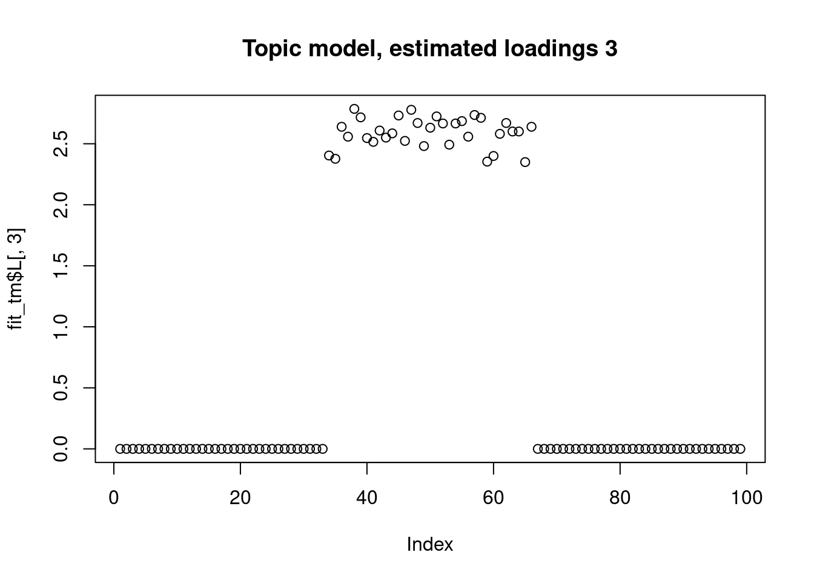

biwhitening PMF
DongyueXie
2022-03-30
Last updated: 2023-03-28
Checks: 7 0
Knit directory: SMF/
This reproducible R Markdown analysis was created with workflowr (version 1.6.2). The Checks tab describes the reproducibility checks that were applied when the results were created. The Past versions tab lists the development history.
Great! Since the R Markdown file has been committed to the Git repository, you know the exact version of the code that produced these results.
Great job! The global environment was empty. Objects defined in the global environment can affect the analysis in your R Markdown file in unknown ways. For reproduciblity it’s best to always run the code in an empty environment.
The command set.seed(20190719) was run prior to running
the code in the R Markdown file. Setting a seed ensures that any results
that rely on randomness, e.g. subsampling or permutations, are
reproducible.
Great job! Recording the operating system, R version, and package versions is critical for reproducibility.
Nice! There were no cached chunks for this analysis, so you can be confident that you successfully produced the results during this run.
Great job! Using relative paths to the files within your workflowr project makes it easier to run your code on other machines.
Great! You are using Git for version control. Tracking code development and connecting the code version to the results is critical for reproducibility.
The results in this page were generated with repository version bcea2b3. See the Past versions tab to see a history of the changes made to the R Markdown and HTML files.
Note that you need to be careful to ensure that all relevant files for
the analysis have been committed to Git prior to generating the results
(you can use wflow_publish or
wflow_git_commit). workflowr only checks the R Markdown
file, but you know if there are other scripts or data files that it
depends on. Below is the status of the Git repository when the results
were generated:
Ignored files:
Ignored: .Rhistory
Ignored: .Rproj.user/
Ignored: analysis/figure/
Untracked files:
Untracked: data/count_files.RData
Untracked: data/lowgene/
Untracked: data/stmGTEx/
Untracked: output/luis/
Untracked: output/plots/
Note that any generated files, e.g. HTML, png, CSS, etc., are not included in this status report because it is ok for generated content to have uncommitted changes.
These are the previous versions of the repository in which changes were
made to the R Markdown (analysis/biwhitening_PMF.Rmd) and
HTML (docs/biwhitening_PMF.html) files. If you’ve
configured a remote Git repository (see ?wflow_git_remote),
click on the hyperlinks in the table below to view the files as they
were in that past version.
| File | Version | Author | Date | Message |
|---|---|---|---|---|
| Rmd | bcea2b3 | DongyueXie | 2023-03-28 | wflow_publish("analysis/biwhitening_PMF.Rmd") |
| html | de0e454 | DongyueXie | 2023-03-18 | Build site. |
| Rmd | 206e141 | DongyueXie | 2023-03-18 | wflow_publish("analysis/biwhitening_PMF.Rmd") |
Introduction
One of the feature we’d like to add to Topic model is to induce sparsity on loadings, and factors, for better interpretability.
Directly adding such constraint is non-trivial, and has not been shown to perform well, especialy using empirical Bayes approach.
Here I took an approach of combining biwhitening, and EBNMF(a scaled version, and
I wrote the code and is available in funflash package). In
this analysis, we show how the method performs well on simple examples,
and can acutally induce sparsity on L, and F.
The examples are taken from here
library(funflash)Simple example, K=3
This is an example where topic model can give sparse estimates, because of sparsity of the data.
The biwhitening + ebnmf method can also recover the true structure. (although it gives slightly more dimensions, the true ones are well recovered, and the redundant ones have very small PVE.) Note also that we input the true K to topic model.
set.seed(12345)
n = 99
p = 300
k= 3
L = matrix(0, nrow=n, ncol=k)
F = matrix(0, nrow=p, ncol=k)
L[1:(n/3),1] = 1
L[((n/3)+1):(2*n/3),2] = 1
L[((2*n/3)+1):n,3] = 1
F[1:(p/3),1] = 1+10*runif(p/3)
F[((p/3)+1):(2*p/3),2] = 1+10*runif(p/3)
F[((2*p/3)+1):p,3] = 1+10*runif(p/3)
lambda = L %*% t(F)
X = matrix(rpois(n=length(lambda),lambda),nrow=n)
image(X)
| Version | Author | Date |
|---|---|---|
| de0e454 | DongyueXie | 2023-03-18 |
fit_tm = fastTopics::fit_poisson_nmf(X,3)Initializing factors using Topic SCORE algorithm.
Initializing loadings by running 10 SCD updates.
Fitting rank-3 Poisson NMF to 99 x 300 dense matrix.
Running 100 SCD updates, without extrapolation (fastTopics 0.6-142).plot(fit_tm$L[,1],main="Topic model, estimated loadings 1")
| Version | Author | Date |
|---|---|---|
| de0e454 | DongyueXie | 2023-03-18 |
plot(fit_tm$L[,2],main="Topic model, estimated loadings 2")
| Version | Author | Date |
|---|---|---|
| de0e454 | DongyueXie | 2023-03-18 |
plot(fit_tm$L[,3],main="Topic model, estimated loadings 3")
| Version | Author | Date |
|---|---|---|
| de0e454 | DongyueXie | 2023-03-18 |
Y_tilde = biwhitening(X)
fit_sf = scaledflash(Y_tilde$Y,Y_tilde$u,Y_tilde$v,
S2 = NULL,
var.type = 'by_column',
Kmax=10,
tol=0.01,
maxiter = 1000,
ebnm_fn = 'ebnm_pe',
init_fn = 'nnmf_r1',
ebnm_param=NULL,
verbose=TRUE,
nullcheck=TRUE,
sigma2 = NULL,
seed=12345)[1] "Fitting dimension 1"
[1] "Iteration 1 : obj -60520.173"
[1] "Iteration 2 : obj -60518.407"
[1] "Iteration 3 : obj -60518.395"
[1] "Iteration 4 : obj -60518.395"
[1] "Performing nullcheck"
[1] "Deleting factor 1 decreases objective by 9383.153"
[1] "Fitting dimension 2"
[1] "Iteration 1 : obj -56070.367"
[1] "Iteration 2 : obj -55884.093"
[1] "Iteration 3 : obj -55010.337"
[1] "Iteration 4 : obj -53000.907"
[1] "Iteration 5 : obj -51931.104"
[1] "Iteration 6 : obj -51906.404"
[1] "Iteration 7 : obj -51906.383"
[1] "Iteration 8 : obj -51906.383"
[1] "Performing nullcheck"
[1] "Deleting factor 2 decreases objective by 8612.012"
[1] "Fitting dimension 3"
[1] "Iteration 1 : obj -43072.511"
[1] "Iteration 2 : obj -43071.899"
[1] "Iteration 3 : obj -43071.896"
[1] "Performing nullcheck"
[1] "Deleting factor 3 decreases objective by 8834.487"
[1] "Fitting dimension 4"
[1] "Iteration 1 : obj -43061.747"
[1] "Iteration 2 : obj -43035.342"
[1] "Iteration 3 : obj -43031.747"
[1] "Iteration 4 : obj -43030.841"
[1] "Iteration 5 : obj -43030.478"
[1] "Iteration 6 : obj -43030.297"
[1] "Iteration 7 : obj -43030.153"
[1] "Iteration 8 : obj -43029.939"
[1] "Iteration 9 : obj -43029.428"
[1] "Iteration 10 : obj -43028.748"
[1] "Iteration 11 : obj -43028.572"
[1] "Iteration 12 : obj -43028.561"
[1] "Iteration 13 : obj -43028.56"
[1] "Performing nullcheck"
[1] "Deleting factor 4 decreases objective by 43.336"
[1] "Fitting dimension 5"
[1] "Iteration 1 : obj -43016.009"
[1] "Iteration 2 : obj -43009.224"
[1] "Iteration 3 : obj -43007.799"
[1] "Iteration 4 : obj -43007.75"
[1] "Iteration 5 : obj -43007.749"
[1] "Performing nullcheck"
[1] "Deleting factor 5 decreases objective by 20.811"
[1] "Fitting dimension 6"
[1] "Iteration 1 : obj -43022.337"
[1] "Iteration 2 : obj -42998.302"
[1] "Iteration 3 : obj -42995.324"
[1] "Iteration 4 : obj -42993.144"
[1] "Iteration 5 : obj -42991.811"
[1] "Iteration 6 : obj -42991.081"
[1] "Iteration 7 : obj -42990.388"
[1] "Iteration 8 : obj -42989.265"
[1] "Iteration 9 : obj -42987.761"
[1] "Iteration 10 : obj -42986.863"
[1] "Iteration 11 : obj -42985.643"
[1] "Iteration 12 : obj -42981.128"
[1] "Iteration 13 : obj -42978.326"
[1] "Iteration 14 : obj -42978.008"
[1] "Iteration 15 : obj -42977.952"
[1] "Iteration 16 : obj -42977.939"
[1] "Iteration 17 : obj -42977.936"
[1] "Performing nullcheck"
[1] "Deleting factor 6 decreases objective by 29.813"
[1] "Fitting dimension 7"
[1] "Iteration 1 : obj -42920.263"
[1] "Iteration 2 : obj -42917.53"
[1] "Iteration 3 : obj -42917.417"
[1] "Iteration 4 : obj -42917.404"
[1] "Iteration 5 : obj -42917.401"
[1] "Performing nullcheck"
[1] "Deleting factor 7 decreases objective by 60.535"
[1] "Fitting dimension 8"
[1] "Iteration 1 : obj -42876.418"
[1] "Iteration 2 : obj -42874.874"
[1] "Iteration 3 : obj -42874.667"
[1] "Iteration 4 : obj -42874.498"
[1] "Iteration 5 : obj -42874.204"
[1] "Iteration 6 : obj -42873.628"
[1] "Iteration 7 : obj -42872.613"
[1] "Iteration 8 : obj -42871.899"
[1] "Iteration 9 : obj -42871.694"
[1] "Iteration 10 : obj -42871.628"
[1] "Iteration 11 : obj -42871.604"
[1] "Iteration 12 : obj -42871.594"
[1] "Performing nullcheck"
[1] "Deleting factor 8 decreases objective by 45.807"
[1] "Fitting dimension 9"
[1] "Iteration 1 : obj -42846.474"
[1] "Iteration 2 : obj -42845.07"
[1] "Iteration 3 : obj -42845.001"
[1] "Iteration 4 : obj -42844.967"
[1] "Iteration 5 : obj -42844.94"
[1] "Iteration 6 : obj -42844.915"
[1] "Iteration 7 : obj -42844.892"
[1] "Iteration 8 : obj -42844.87"
[1] "Iteration 9 : obj -42844.848"
[1] "Iteration 10 : obj -42844.827"
[1] "Iteration 11 : obj -42844.805"
[1] "Iteration 12 : obj -42844.784"
[1] "Iteration 13 : obj -42844.761"
[1] "Iteration 14 : obj -42844.738"
[1] "Iteration 15 : obj -42844.712"
[1] "Iteration 16 : obj -42844.683"
[1] "Iteration 17 : obj -42844.65"
[1] "Iteration 18 : obj -42844.612"
[1] "Iteration 19 : obj -42844.564"
[1] "Iteration 20 : obj -42844.505"
[1] "Iteration 21 : obj -42844.428"
[1] "Iteration 22 : obj -42844.326"
[1] "Iteration 23 : obj -42844.189"
[1] "Iteration 24 : obj -42844.01"
[1] "Iteration 25 : obj -42843.787"
[1] "Iteration 26 : obj -42843.536"
[1] "Iteration 27 : obj -42843.29"
[1] "Iteration 28 : obj -42843.085"
[1] "Iteration 29 : obj -42842.937"
[1] "Iteration 30 : obj -42842.84"
[1] "Iteration 31 : obj -42842.78"
[1] "Iteration 32 : obj -42842.742"
[1] "Iteration 33 : obj -42842.715"
[1] "Iteration 34 : obj -42842.694"
[1] "Iteration 35 : obj -42842.675"
[1] "Iteration 36 : obj -42842.654"
[1] "Iteration 37 : obj -42842.624"
[1] "Iteration 38 : obj -42842.57"
[1] "Iteration 39 : obj -42842.441"
[1] "Iteration 40 : obj -42842.058"
[1] "Iteration 41 : obj -42841.316"
[1] "Iteration 42 : obj -42840.913"
[1] "Iteration 43 : obj -42840.799"
[1] "Iteration 44 : obj -42840.761"
[1] "Iteration 45 : obj -42840.749"
[1] "Iteration 46 : obj -42840.745"
[1] "Performing nullcheck"
[1] "Deleting factor 9 decreases objective by 30.848"
[1] "Fitting dimension 10"
[1] "Iteration 1 : obj -42878.593"
[1] "loading zeroed out"
[1] "Performing nullcheck"
[1] "Deleting factor 10 increases objective by 0.014"plot(fit_sf$ldf$l[,1],main="biwhitening+flash, estimated loadings 1")
| Version | Author | Date |
|---|---|---|
| de0e454 | DongyueXie | 2023-03-18 |
plot(fit_sf$ldf$l[,2],main="biwhitening+flash, estimated loadings 1")
| Version | Author | Date |
|---|---|---|
| de0e454 | DongyueXie | 2023-03-18 |
plot(fit_sf$ldf$l[,3],main="biwhitening+flash, estimated loadings 1")
| Version | Author | Date |
|---|---|---|
| de0e454 | DongyueXie | 2023-03-18 |
fit_sf$pve[1] 0.3444512531 0.3032855662 0.2955528179 0.0002778274 0.0005363181
[6] 0.0005213643 0.0007272142 0.0004340449 0.0005863254Harder example, K=4
This is a harder example because there’s a background now, and we see that topic model cannot give sparse estimates.
However, biwhitening + ebnmf gives the sparse recovery, and also estimates the correct K.
#################
set.seed(12345)
n = 99
p = 300
k= 4
mfac = 3 # controls PVE of dense factor
L = matrix(0, nrow=n, ncol=k)
F = matrix(0, nrow=p, ncol=k)
L[1:(n/3),1] = 1
L[((n/3)+1):(2*n/3),2] = 1
L[((2*n/3)+1):n,3] = 1
L[,4] = 1+mfac*runif(n)
F[1:(p/3),1] = 1+10*runif(p/3)
F[((p/3)+1):(2*p/3),2] = 1+10*runif(p/3)
F[((2*p/3)+1):p,3] = 1+10*runif(p/3)
F[,4]= 1+mfac*runif(p)
lambda = L %*% t(F)
X = matrix(rpois(n=length(lambda),lambda),nrow=n)
image(X)
| Version | Author | Date |
|---|---|---|
| de0e454 | DongyueXie | 2023-03-18 |
fit_tm = fastTopics::fit_poisson_nmf(X,4)Initializing factors using Topic SCORE algorithm.
Initializing loadings by running 10 SCD updates.
Fitting rank-4 Poisson NMF to 99 x 300 dense matrix.
Running 100 SCD updates, without extrapolation (fastTopics 0.6-142).plot(fit_tm$L[,1],main="Topic model, estimated loadings 1")plot(fit_tm$L[,2],main="Topic model, estimated loadings 2")plot(fit_tm$L[,3],main="Topic model, estimated loadings 3")plot(fit_tm$L[,4],main="Topic model, estimated loadings 4")Y_tilde = biwhitening(X)
fit_sf = scaledflash(Y_tilde$Y,Y_tilde$u,Y_tilde$v,
S2 = NULL,
var.type = 'by_column',
Kmax=10,
tol=0.01,
maxiter = 1000,
ebnm_fn = 'ebnm_pe',
init_fn = 'nnmf_r1',
ebnm_param=NULL,
verbose=TRUE,
nullcheck=TRUE,
sigma2 = NULL,
seed=12345)[1] "Fitting dimension 1"
[1] "Iteration 1 : obj -54431.147"
[1] "Iteration 2 : obj -54429.233"
[1] "Iteration 3 : obj -54429.154"
[1] "Iteration 4 : obj -54429.134"
[1] "Iteration 5 : obj -54429.129"
[1] "Performing nullcheck"
[1] "Deleting factor 1 decreases objective by 22965.943"
[1] "Fitting dimension 2"
[1] "Iteration 1 : obj -52811.664"
[1] "Iteration 2 : obj -52810.99"
[1] "Iteration 3 : obj -52810.989"
[1] "Performing nullcheck"
[1] "Deleting factor 2 decreases objective by 1618.139"
[1] "Fitting dimension 3"
[1] "Iteration 1 : obj -51163.449"
[1] "Iteration 2 : obj -51162.824"
[1] "Iteration 3 : obj -51162.823"
[1] "Performing nullcheck"
[1] "Deleting factor 3 decreases objective by 1648.165"
[1] "Fitting dimension 4"
[1] "Iteration 1 : obj -49454.453"
[1] "Iteration 2 : obj -49453.841"
[1] "Iteration 3 : obj -49453.84"
[1] "Performing nullcheck"
[1] "Deleting factor 4 decreases objective by 1708.983"
[1] "Fitting dimension 5"
[1] "factor zeroed out"
[1] "Performing nullcheck"
[1] "Deleting factor 5 increases objective by 15.974"plot(fit_sf$ldf$l[,1],main="biwhitening+flash, estimated loadings 1")plot(fit_sf$ldf$l[,2],main="biwhitening+flash, estimated loadings 2")plot(fit_sf$ldf$l[,3],main="biwhitening+flash, estimated loadings 3")plot(fit_sf$ldf$l[,4],main="biwhitening+flash, estimated loadings 4")library(RcppML)
library(NMF)Loading required package: registryLoading required package: rngtoolsLoading required package: clusterNMF - BioConductor layer [OK] | Shared memory capabilities [NO: bigmemory] | Cores 27/28 To enable shared memory capabilities, try: install.extras('
NMF
')
Attaching package: 'NMF'The following object is masked from 'package:RcppML':
nmffitted_rcppml_nmf = function(fit){
fit$w%*%diag(fit$d)%*%fit$h
}
n_try = 10
fit_nmf1_best = RcppML::nmf(X,4,L1=c(0.99,0.99),seed=0)
iter | tol
---------------
1 | 8.09e-01
2 | 2.71e-02
3 | 4.40e-03
4 | 2.23e-03
5 | 1.19e-03
6 | 6.44e-04
7 | 3.55e-04
8 | 2.08e-04
9 | 1.28e-04
10 | 7.98e-05error_best = sum((X-fitted_rcppml_nmf(fit_nmf1_best))^2)
for(i in 1:n_try){
fit_nmf1 = RcppML::nmf(X,4,L1=c(0.99,0.99),seed=i)
error = sum((X-fitted_rcppml_nmf(fit_nmf1))^2)
if(error<error_best){
fit_nmf1_best = fit_nmf1
error_best = error
}
}
iter | tol
---------------
1 | 6.07e-01
2 | 1.69e-01
3 | 1.12e-02
4 | 4.37e-03
5 | 2.08e-03
6 | 1.07e-03
7 | 6.09e-04
8 | 3.67e-04
9 | 2.31e-04
10 | 1.52e-04
11 | 1.05e-04
12 | 7.60e-05
iter | tol
---------------
1 | 7.79e-01
2 | 1.52e-02
3 | 5.08e-03
4 | 2.30e-03
5 | 1.07e-03
6 | 5.71e-04
7 | 3.49e-04
8 | 2.28e-04
9 | 1.53e-04
10 | 1.12e-04
11 | 8.42e-05
iter | tol
---------------
1 | 7.68e-01
2 | 2.03e-02
3 | 5.41e-03
4 | 2.06e-03
5 | 1.14e-03
6 | 7.65e-04
7 | 5.40e-04
8 | 4.00e-04
9 | 3.09e-04
10 | 2.40e-04
11 | 1.88e-04
12 | 1.46e-04
13 | 1.14e-04
14 | 9.07e-05
iter | tol
---------------
1 | 8.17e-01
2 | 4.12e-02
3 | 3.62e-03
4 | 2.29e-03
5 | 1.80e-03
6 | 1.50e-03
7 | 1.44e-03
8 | 1.37e-03
9 | 1.27e-03
10 | 1.13e-03
11 | 9.70e-04
12 | 8.48e-04
13 | 7.20e-04
14 | 6.00e-04
15 | 4.88e-04
16 | 3.91e-04
17 | 3.15e-04
18 | 2.56e-04
19 | 2.07e-04
20 | 1.73e-04
21 | 1.51e-04
22 | 1.36e-04
23 | 1.26e-04
24 | 1.20e-04
25 | 1.16e-04
26 | 1.13e-04
27 | 1.10e-04
28 | 1.06e-04
29 | 1.03e-04
30 | 9.99e-05
iter | tol
---------------
1 | 7.34e-01
2 | 1.93e-02
3 | 6.65e-03
4 | 3.30e-03
5 | 1.76e-03
6 | 1.02e-03
7 | 7.06e-04
8 | 5.46e-04
9 | 4.44e-04
10 | 3.61e-04
11 | 2.94e-04
12 | 2.40e-04
13 | 1.97e-04
14 | 1.63e-04
15 | 1.37e-04
16 | 1.20e-04
17 | 1.09e-04
18 | 1.00e-04
19 | 9.23e-05
iter | tol
---------------
1 | 7.68e-01
2 | 4.48e-02
3 | 4.29e-03
4 | 2.70e-03
5 | 1.85e-03
6 | 1.31e-03
7 | 8.84e-04
8 | 6.19e-04
9 | 4.66e-04
10 | 3.68e-04
11 | 3.00e-04
12 | 2.56e-04
13 | 2.21e-04
14 | 1.89e-04
15 | 1.58e-04
16 | 1.32e-04
17 | 1.07e-04
18 | 8.61e-05
iter | tol
---------------
1 | 7.99e-01
2 | 5.48e-02
3 | 6.56e-03
4 | 3.81e-03
5 | 2.63e-03
6 | 1.97e-03
7 | 1.63e-03
8 | 1.49e-03
9 | 1.43e-03
10 | 1.39e-03
11 | 1.36e-03
12 | 1.32e-03
13 | 1.23e-03
14 | 1.16e-03
15 | 1.08e-03
16 | 1.01e-03
17 | 9.11e-04
18 | 7.99e-04
19 | 6.81e-04
20 | 5.79e-04
21 | 4.86e-04
22 | 4.05e-04
23 | 3.27e-04
24 | 2.65e-04
25 | 2.19e-04
26 | 1.85e-04
27 | 1.58e-04
28 | 1.36e-04
29 | 1.17e-04
30 | 1.01e-04
31 | 9.15e-05
iter | tol
---------------
1 | 5.89e-01
2 | 2.00e-01
3 | 8.29e-03
4 | 4.02e-03
5 | 2.04e-03
6 | 1.18e-03
7 | 7.62e-04
8 | 5.30e-04
9 | 3.98e-04
10 | 3.17e-04
11 | 2.61e-04
12 | 2.20e-04
13 | 1.84e-04
14 | 1.54e-04
15 | 1.31e-04
16 | 1.12e-04
17 | 9.48e-05
iter | tol
---------------
1 | 7.77e-01
2 | 2.56e-02
3 | 5.42e-03
4 | 3.41e-03
5 | 2.58e-03
6 | 1.92e-03
7 | 1.29e-03
8 | 8.46e-04
9 | 5.83e-04
10 | 4.25e-04
11 | 3.26e-04
12 | 2.59e-04
13 | 2.09e-04
14 | 1.75e-04
15 | 1.50e-04
16 | 1.33e-04
17 | 1.20e-04
18 | 1.10e-04
19 | 1.02e-04
20 | 9.43e-05
iter | tol
---------------
1 | 7.34e-01
2 | 1.55e-02
3 | 2.40e-03
4 | 1.02e-03
5 | 5.00e-04
6 | 2.80e-04
7 | 1.80e-04
8 | 1.26e-04
9 | 9.25e-05fitted_nmf2 = function(fit){
fit@fit@W%*%fit@fit@H
}
beta = 0.5
fit_nmf2_best = NMF::nmf(X,4,'snmf/l',beta = beta,seed=0)Warning in nmf_snmf(beta = 0.5, A = y, x = x, version = "L", verbose = FALSE):
NMF::snmf - Too many restarts due to too big 'beta' value [Computation stopped
after the 9th restart]error_best = sum((X-fitted_nmf2(fit_nmf2_best))^2)
for(i in 1:n_try){
fit_nmf2 = NMF::nmf(X,4,'snmf/l',beta = beta,seed=i)
error = sum((X-fitted_nmf2(fit_nmf2))^2)
if(error<error_best){
fit_nmf2_best = fit_nmf2
error_best = error
}
}Warning in nmf_snmf(beta = 0.5, A = y, x = x, version = "L", verbose = FALSE):
NMF::snmf - Too many restarts due to too big 'beta' value [Computation stopped
after the 9th restart]
Warning in nmf_snmf(beta = 0.5, A = y, x = x, version = "L", verbose = FALSE):
NMF::snmf - Too many restarts due to too big 'beta' value [Computation stopped
after the 9th restart]
Warning in nmf_snmf(beta = 0.5, A = y, x = x, version = "L", verbose = FALSE):
NMF::snmf - Too many restarts due to too big 'beta' value [Computation stopped
after the 9th restart]
Warning in nmf_snmf(beta = 0.5, A = y, x = x, version = "L", verbose = FALSE):
NMF::snmf - Too many restarts due to too big 'beta' value [Computation stopped
after the 9th restart]
Warning in nmf_snmf(beta = 0.5, A = y, x = x, version = "L", verbose = FALSE):
NMF::snmf - Too many restarts due to too big 'beta' value [Computation stopped
after the 9th restart]
Warning in nmf_snmf(beta = 0.5, A = y, x = x, version = "L", verbose = FALSE):
NMF::snmf - Too many restarts due to too big 'beta' value [Computation stopped
after the 9th restart]
Warning in nmf_snmf(beta = 0.5, A = y, x = x, version = "L", verbose = FALSE):
NMF::snmf - Too many restarts due to too big 'beta' value [Computation stopped
after the 9th restart]
Warning in nmf_snmf(beta = 0.5, A = y, x = x, version = "L", verbose = FALSE):
NMF::snmf - Too many restarts due to too big 'beta' value [Computation stopped
after the 9th restart]my_ldf = function(Lhat,Fhat){
dl = apply(Lhat,2,norm,type='2')
df = apply(Fhat,2,norm,type='2')
return(list(l = apply(Lhat,2,function(z){z/norm(z,'2')}),
f = apply(Fhat,2,function(z){z/norm(z,'2')}),
d = dl*df))
}
library(ggplot2)
library(gridExtra)
Attaching package: 'gridExtra'The following object is masked from 'package:Biobase':
combineThe following object is masked from 'package:BiocGenerics':
combinelibrary(grid)
plots = list()
for(i in 1:4){
temp = my_ldf(L,F)
data <- data.frame(x=1:99,y =temp$l[,i])
plots[[i]] <- ggplot(data, aes(x = x,y=y)) + geom_point() + theme(axis.title.x = element_blank(),axis.title.y = element_blank())
}
do.call(grid.arrange,c(plots,list(nrow=2,bottom=textGrob("True L"))))for(i in 1:4){
temp = my_ldf(fit_tm$L,fit_tm$F)
data <- data.frame(x=1:99,y =temp$l[,i])
plots[[i]] <- ggplot(data, aes(x = x,y=y)) + geom_point() + theme(axis.title.x = element_blank(),axis.title.y = element_blank())
}
do.call(grid.arrange,c(plots,list(nrow=2,bottom=textGrob("fastTopics::fit_poisson_nmf"))))for(i in 1:4){
temp = my_ldf(fit_sf$ldf$l,fit_sf$ldf$f)
data <- data.frame(x=1:99,y =temp$l[,i])
plots[[i]] <- ggplot(data, aes(x = x,y=y)) + geom_point() + theme(axis.title.x = element_blank(),axis.title.y = element_blank())
}
do.call(grid.arrange,c(plots,list(nrow=2,bottom=textGrob("Biwhitening EBNMF"))))
for(i in 1:4){
temp = my_ldf(fit_nmf1_best$w,t(fit_nmf1_best$h))
data <- data.frame(x=1:99,y =temp$l[,i])
plots[[i]] <- ggplot(data, aes(x = x,y=y)) + geom_point() + theme(axis.title.x = element_blank(),axis.title.y = element_blank())
}
do.call(grid.arrange,c(plots,list(nrow=2,bottom=textGrob("RcppML::nmf"))))for(i in 1:4){
temp = my_ldf(fit_nmf2_best@fit@W,t(fit_nmf2_best@fit@H))
data <- data.frame(x=1:99,y =temp$l[,i])
plots[[i]] <- ggplot(data, aes(x = x,y=y)) + geom_point() + theme(axis.title.x = element_blank(),axis.title.y = element_blank())
}
do.call(grid.arrange,c(plots,list(nrow=2,bottom=textGrob("NMF::nmf"))))plot F
plots = list()
for(i in 1:4){
temp = my_ldf(L,F)
data <- data.frame(x=1:300,y =temp$f[,i])
plots[[i]] <- ggplot(data, aes(x = x,y=y)) + geom_point() + theme(axis.title.x = element_blank(),axis.title.y = element_blank())
}
do.call(grid.arrange,c(plots,list(nrow=2,bottom=textGrob("True F"))))for(i in 1:4){
temp = my_ldf(fit_tm$L,fit_tm$F)
data <- data.frame(x=1:300,y =temp$f[,i])
plots[[i]] <- ggplot(data, aes(x = x,y=y)) + geom_point() + theme(axis.title.x = element_blank(),axis.title.y = element_blank())
}
do.call(grid.arrange,c(plots,list(nrow=2,bottom=textGrob("fastTopics::fit_poisson_nmf"))))for(i in 1:4){
temp = my_ldf(fit_sf$ldf$l,fit_sf$ldf$f)
data <- data.frame(x=1:300,y =temp$f[,i])
plots[[i]] <- ggplot(data, aes(x = x,y=y)) + geom_point() + theme(axis.title.x = element_blank(),axis.title.y = element_blank())
}
do.call(grid.arrange,c(plots,list(nrow=2,bottom=textGrob("Biwhitening EBNMF"))))for(i in 1:4){
temp = my_ldf(fit_nmf1_best$w,t(fit_nmf1_best$h))
data <- data.frame(x=1:300,y =temp$f[,i])
plots[[i]] <- ggplot(data, aes(x = x,y=y)) + geom_point() + theme(axis.title.x = element_blank(),axis.title.y = element_blank())
}
do.call(grid.arrange,c(plots,list(nrow=2,bottom=textGrob("RcppML::nmf"))))for(i in 1:4){
temp = my_ldf(fit_nmf2_best@fit@W,t(fit_nmf2_best@fit@H))
data <- data.frame(x=1:300,y =temp$f[,i])
plots[[i]] <- ggplot(data, aes(x = x,y=y)) + geom_point() + theme(axis.title.x = element_blank(),axis.title.y = element_blank())
}
do.call(grid.arrange,c(plots,list(nrow=2,bottom=textGrob("NMF::nmf"))))
sessionInfo()R version 4.1.0 (2021-05-18)
Platform: x86_64-pc-linux-gnu (64-bit)
Running under: CentOS Linux 7 (Core)
Matrix products: default
BLAS: /software/R-4.1.0-no-openblas-el7-x86_64/lib64/R/lib/libRblas.so
LAPACK: /software/R-4.1.0-no-openblas-el7-x86_64/lib64/R/lib/libRlapack.so
locale:
[1] LC_CTYPE=en_US.UTF-8 LC_NUMERIC=C LC_TIME=C
[4] LC_COLLATE=C LC_MONETARY=C LC_MESSAGES=C
[7] LC_PAPER=C LC_NAME=C LC_ADDRESS=C
[10] LC_TELEPHONE=C LC_MEASUREMENT=C LC_IDENTIFICATION=C
attached base packages:
[1] grid stats graphics grDevices utils datasets methods
[8] base
other attached packages:
[1] gridExtra_2.3 ggplot2_3.4.1 NMF_0.25
[4] Biobase_2.54.0 BiocGenerics_0.40.0 cluster_2.1.2
[7] rngtools_1.5 registry_0.5-1 RcppML_0.3.7
[10] funflash_0.1.2 workflowr_1.6.2
loaded via a namespace (and not attached):
[1] Rtsne_0.16 colorspace_2.1-0 smashr_1.3-6
[4] ellipsis_0.3.2 rprojroot_2.0.2 fastTopics_0.6-142
[7] fs_1.5.0 rstudioapi_0.13 farver_2.1.1
[10] MatrixModels_0.5-1 ggrepel_0.9.3 fansi_1.0.4
[13] codetools_0.2-18 splines_4.1.0 doParallel_1.0.17
[16] knitr_1.33 jsonlite_1.8.4 mcmc_0.9-7
[19] gridBase_0.4-7 ashr_2.2-54 flashr_0.6-8
[22] uwot_0.1.14 BiocManager_1.30.20 compiler_4.1.0
[25] httr_1.4.5 Matrix_1.5-3 fastmap_1.1.0
[28] lazyeval_0.2.2 cli_3.6.0 later_1.3.0
[31] htmltools_0.5.4 quantreg_5.94 prettyunits_1.1.1
[34] tools_4.1.0 coda_0.19-4 gtable_0.3.1
[37] glue_1.6.2 reshape2_1.4.4 dplyr_1.1.0
[40] Rcpp_1.0.10 softImpute_1.4-1 jquerylib_0.1.4
[43] vctrs_0.5.2 iterators_1.0.13 wavethresh_4.7.2
[46] xfun_0.24 stringr_1.5.0 trust_0.1-8
[49] lifecycle_1.0.3 irlba_2.3.5.1 NNLM_0.4.4
[52] MASS_7.3-54 scales_1.2.1 hms_1.1.2
[55] promises_1.2.0.1 parallel_4.1.0 SparseM_1.81
[58] RColorBrewer_1.1-3 yaml_2.3.7 pbapply_1.7-0
[61] sass_0.4.0 stringi_1.6.2 SQUAREM_2021.1
[64] highr_0.9 deconvolveR_1.2-1 foreach_1.5.1
[67] caTools_1.18.2 truncnorm_1.0-8 horseshoe_0.2.0
[70] rlang_1.0.6 pkgconfig_2.0.3 bitops_1.0-7
[73] ebnm_1.0-11 evaluate_0.14 lattice_0.20-44
[76] invgamma_1.1 purrr_1.0.1 labeling_0.4.2
[79] htmlwidgets_1.6.1 cowplot_1.1.1 tidyselect_1.2.0
[82] plyr_1.8.6 magrittr_2.0.3 R6_2.5.1
[85] generics_0.1.3 DBI_1.1.1 withr_2.5.0
[88] pillar_1.8.1 whisker_0.4 survival_3.2-11
[91] mixsqp_0.3-48 tibble_3.1.8 crayon_1.5.2
[94] utf8_1.2.3 plotly_4.10.1 rmarkdown_2.9
[97] progress_1.2.2 data.table_1.14.8 git2r_0.28.0
[100] digest_0.6.31 tidyr_1.3.0 httpuv_1.6.1
[103] MCMCpack_1.6-3 RcppParallel_5.1.7 munsell_0.5.0
[106] viridisLite_0.4.1 bslib_0.2.5.1 quadprog_1.5-8